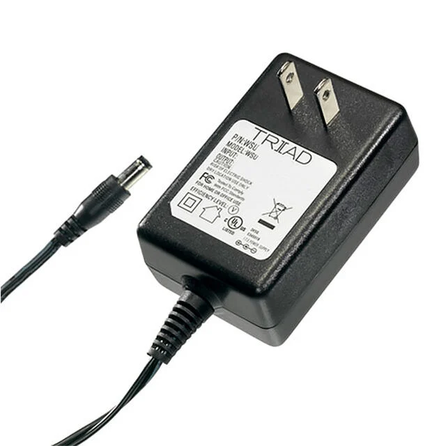
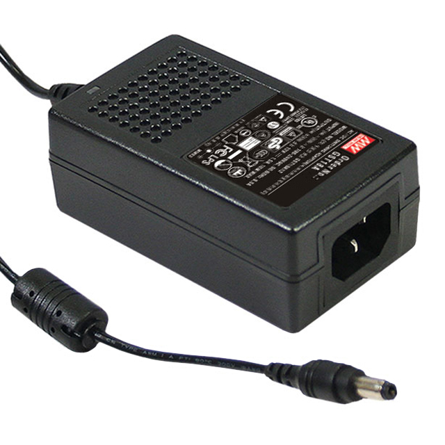
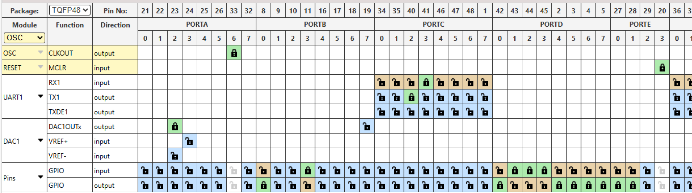
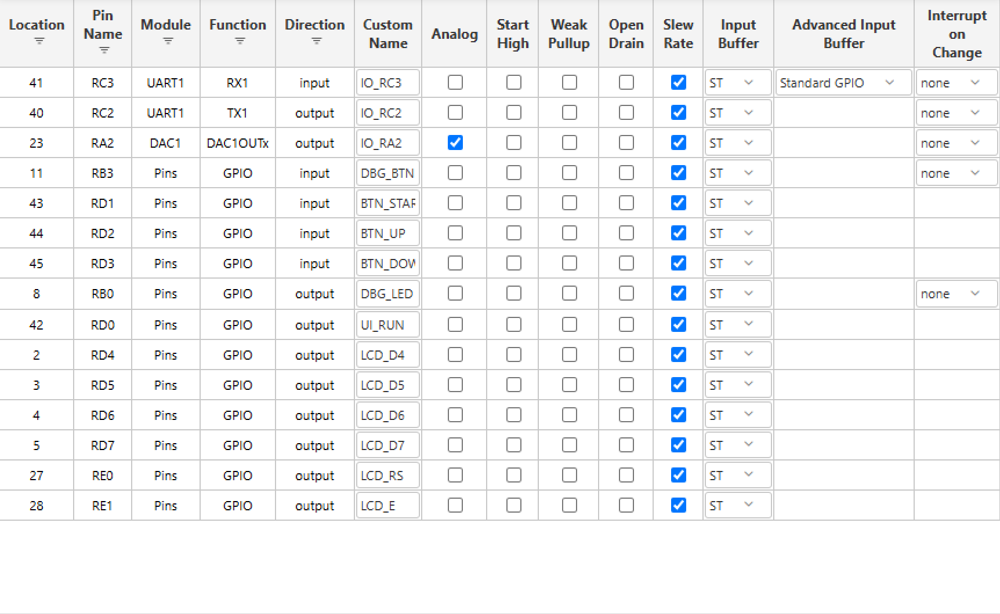
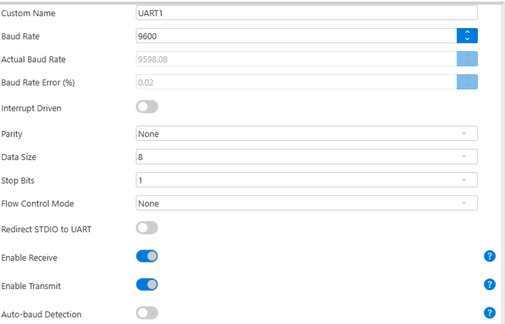
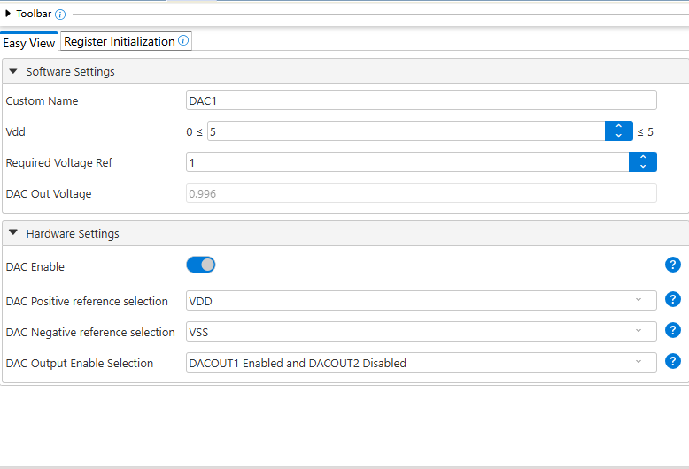

Component Selection: User Interface Board
Duotao Gao · Team 103 (Duotao Gao, Gabriel Toneser Facchin, Zice Sun) · Project: GripRx, a prescription-based automatic-resistance grip trainer
Overview
This page compares three candidate solutions for every major component of my subsystem, the user interface (UI) board, and explains which one I chose and why. The components follow the blocks of my individual block diagram: the speaker, the character LCD, the op amp for the audio amplifier the 5 V voltage regulator and the 9 V wall adapter. The microcontroller (PIC18F57Q43 Curiosity Nano) and the push buttons are not compared, as the assignment instructs. All five component belong to my individual subsystem and are labeled in bold as [Individual subsystem: UI board].
Speaker — [Individual subsystem: UI board]
-
CMS-4065-28L200 speaker
- $4.68/each
- link to product
Pros Cons It comes with a lead wire for easy connection. Its 40 mm diameter is the largest of the three, so it needs the most space inside the enclosure. Impedance 8Ω, rated input power 2W. The unit price of $4.68 is relatively high. -
CMS-3652-28L200 speaker
- $2.17 /each
- Link to product
Pros Cons Its 8 Ω impedance matches the planned speaker load. The nominal diameter is 36mm, and sufficient installation space needs to be reserved inside the casing. Rated input power: 2 W. The manufacturer suggests using it in conjunction with the casing, but additional considerations need to be given to the fixed structure and acoustic design. Nominal 36mm, with the lowest price at $2.17. -
CMS-36205-28L200 speaker
- $4.73/each
- Link to product
Pros Cons Its 36.2 × 20.5 mm oval shape fits a slim handle enclosure. The maximum unit price is $4.73 Its 20.5 mm width fits narrow spaces where a 36–40 mm round speaker would not. The oval housing requires a matching mounting bracket or enclosure opening.


Choice: Option 2: CMS-3652-28L200 speaker
Rationale: I chose the CMS-3652-28L200 because it is the cheapest among the three candidate models, compact in size, and comes with leads for easy connection to the J5. Its nominal impedance is 8Ω and the rated input power is 2W. The actual sound effect after being combined with the MCP6004 amplifier, series resistor and housing will be verified in the prototype test. This choice supports UX-05, which requires the end-of-target notification to be audible at 65 dBA or more at 0.5 m, and keeps the board within the MF-05 prototype cost target.
LCD Display — [Individual subsystem: UI board]
-
NHD-0216K1Z-FL-YBW LCD Display
- $7.83/each
- link to product
Pros Cons The 5V power supply complies with the power rail planned to be adopted by the UI board. The typical current of the backlight at 5V is 130mA, which needs to be included in the power supply budget. Semi-transparent reflective screens can display by using ambient light. When using a 4-bit write-only connection method, six GPIO signal lines are required. -
NHD-0216K1Z-FSW-FBW-L LCD Display
- $8.11/each
- Link to product
Pros Cons The typical current of the backlight at 5V is only 15mA, which helps to control the power supply burden. The 16×2 character format limits the amount of information that can be displayed at one time. The FSTN positive display screen features a light background with dark text, making it suitable for showing text readings. The V0 pin requires an external contrast voltage setting to add a regulating connection. -
NHD-0216K1Z-NSW-BBW-L LCD Display
- $7.44/each
- Link to product
Pros Cons Supports 5V power supply and parallel interface. Transmissive screens rely on backlighting to obtain readable displays. The white backlight makes it convenient to view the content in a darker environment. The character layout cannot present a complete graphical user interface.


Choice: Option 2: NHD-0216K1Z-FSW-FBW-L LCD display
Rationale: I choose Option 2 because it conforms to the planned 5V power supply, parallel interface and 16×2 character format, with a typical backlight current of 15mA. Although the base price has increased by $0.28, the typical backlight current has been reduced from 130mA to 15mA, which helps to alleviate the power supply burden on the UI board. Because the LCD comes on its own small PCB, I will confirm with the instructor that it is not considered a daughter board before ordering. This display supports UX-02 (grip force shown with 0.1 kgf resolution and updated at 5 Hz or faster) and UX-03 (resistance level, completed repetitions and target repetitions visible at the same time on the two 16-character lines).
Audio Op Amp — [Individual subsystem: UI board]
-
MCP6004-I/P quad op amp

- $0.6/each
- link to product
Pros Cons Rail-to-rail input and output on a 1.8–6.0 V supply, so it works on the 5 V rail and is issued in the class kit at no cost. The 1 MHz gain-bandwidth product limits high-frequency, high-gain designs. DIP package simplifies breadboard prototyping In the four-way operational amplifier structure, the unused channels need to be connected correctly. -
MCP6024-I/P quad op amp
- $2.73/each
- Link to product
Pros Cons A 10 MHz gain-bandwidth product provides design margin. Typical quiescent current is approximately 1 mA per channel. DIP package allows easy assembly and replacement. Unused channels occupy space and require proper termination. -
TLV9004IPWR quad op amp
- $0.91/each
- Link to product
Pros Cons Rail-to-rail input and output from 1.8 V to 5.5 V, so it works on the 5 V rail. Its TSSOP-14 package has a 0.65 mm pin pitch, finer than the 0.8 mm minimum of the Peralta PCB mill, so it cannot be used on our milled board (and it needs an adapter for breadboard testing). The typical quiescent current per channel is approximately 60µA. The maximum working power supply is 5.5V and it cannot be directly connected to a 9V power source.


Choice: Option 1: MCP6004-I/P
Rationale: I chose the MCP6004-I/P because it can use the 5V power supply of the circuit board. The course kit is already provided, and the DIP package is suitable for breadboard prototype testing and through-hole assembly. According to the feedback from TA, the updated design uses one of the channels as an inverting audio amplifier and no longer sets up an independent buffer stage or low-pass filter stage. Set the nominal AC gain to -2 with a 100kΩ input resistor and a 200kΩ feedback resistor. Due to the limited output driving capacity of the MCP6004, the actual speaker volume will be verified in the prototype test. The amplifier drives the speaker from the DAC output to meet UX-05, and using one channel of a class-kit quad op amp keeps the cost low for MF-05.
5V Voltage Regulator — [Individual subsystem: UI board]
-
L7805ABV-DG 5V Voltage Regulator

- $1.04/each (Mouser); issued in class, so it costs nothing from my budget
- ST L7805ABV-DG at Mouser
Pros Cons A fixed 5V output is required, and there is no need to set the resistor for the output voltage. The input and output voltage differences are converted into heat, and heat dissipation is required when there is a large current. The TO-220 in-line package is easy TO assemble and comes with overheat and short-circuit protection. The dropout voltage is about 2 V, so the input must stay above 7 V; the 9 V adapter leaves 2 V of headroom. -
LM2940CT-5.0/NOPB 5V Voltage Regulator

- $2/each
- Link to product
Pros Cons Fixed 5V output, supporting 1A output current, and heat dissipation conditions must be met. The output capacitance must be at least 22µF and must meet the ESR requirements. At 1A, the typical dropout voltage is approximately 0.5V. Converting 9 V to 5 V still generates substantial heat. -
R-78B5.0-1.0 5V Voltage Regulator
- $12.17/each
- Link to product
Pros Cons Supports 6.5-32V input and provides 5V, 1A output. There are switching ripples and noise. Audio circuits need to pay attention to filtering and layout. The switch has a high conversion efficiency and can reduce heat loss during the voltage reduction process. The module has a minimum load recommendation. When the load is light, the output performance needs to be checked. It is a switching module, but the course requires a through-hole linear regulator on every board, and at $12.17 it costs about ten times more.

Choice: Option 1: L7805ABV-DG 5V Voltage Regulator
Rationale: I chose the L7805ABV-DG, the 5 V regulator issued in class and used on all three team boards, to convert the 9 V input to 5 V. It supplies up to 1.5 A, which covers the worst-case current of the UI board (the LCD, the MCP6004 audio circuit, and the Curiosity Nano) with margin, and its 2 V dropout is satisfied by the 9 V adapter. It needs no voltage-setting resistors, the TO-220 through-hole package is easy to solder and can carry a small heatsink, and the built-in current limit and thermal shutdown protect the board. The LM2940CT-5.0 has a lower dropout but only a 1 A rating, and the R-78B5.0-1.0 is a switching module whose ripple could be heard through the audio path, while the course requires a linear regulator. It is a common through-hole part with a documented alternate (LM2940CT-5.0), which satisfies MF-04. 9V AC/DC Power Adapter — [Individual subsystem: UI board]
-
WSU090-1300 9V AC/DC Power Adapter

- $8.65/each
- link to product
Pros Cons A 9V output is suitable for providing input to the L7805ABV-DG. The full-load operating temperature range is 0 to 40°C. The American-style plug can be directly inserted into the socket without the need for an additional AC power cord The output ripple and noise have a maximum peak-to-peak value of 150mV. The audio circuit needs to do a good job in power filtering. Its 1.3 A output is less than the 1.5 A rating of the L7805ABV-DG, so it fails the power budget check that the source must supply the full regulator rating. -
GST18A09-P1J 9V AC/DC Power Adapter

- $14.1/each
- Link to product
Pros Cons It provides an output capacity of 9V and 2A. The AC power cord needs to be purchased separately. The desktop structure allows the power supply body to be placed on the workbench. The 93 × 54 × 36mm casing requires additional space for placement. -
SWI12-9-N-P5 9V AC/DC Power Adapter
- $17.71/each
- Link to product
Pros Cons Supports 90-264VAC input. The output capacity is limited to 1.2A. The no-load power consumption is up to 75mW, which can reduce the standby power consumption. Fixed American pins need to be converted into plugs in other standard socket areas. -
BestCH 9V 3A AC/DC Power Adapter (issued in class)
- $4.52/each on Amazon (B09ZTKTLGW); issued in class, so it costs nothing from my budget
- BestCH 9 V 3 A adapter on Amazon
Pros Cons Its 3 A output covers the full 1.5 A rating of the L7805ABV-DG regulator with 1.5 A to spare. There is no manufacturer datasheet, only the specifications in the store listing. It is already issued in class, so it costs nothing and is available now. The plug inner diameter and polarity are not stated, so I must check the fit and the center-positive polarity with a multimeter before the first power-up. The 9 V output gives the L7805ABV-DG its required 2 V of dropout headroom without excess heat. Amazon purchases are not reimbursable, so a replacement would come out of pocket.


Choice: Option 4: BestCH 9V 3A AC/DC Power Adapter (issued in class), with the Mean Well GST18A09-P1J (Option 2) as the backup
Rationale: The power budget requires the external source to supply the full rating of every regulator connected to it, which is 1.5 A for the L7805ABV-DG. The BestCH adapter supplies 3 A, leaving 1.5 A to spare, and it is already issued in class at no cost. Its 9 V output gives the regulator its 2 V of dropout headroom while producing less heat than a 12 V supply. The Triad WSU090-1300 (1.3 A) and the SWI12-9-N-P5 (1.2 A) fail the power budget check, so the Mean Well GST18A09-P1J (2 A) is my backup if the class adapter fails its polarity and voltage checks. Because the BestCH adapter has no manufacturer datasheet, I will measure its polarity and no-load voltage before connecting the board. The Mean Well GST18A09-P1J is recorded as the documented alternate required by MF-04, and the class-issued adapter adds no cost to the MF-05 budget.
Microcontroller Pin Table
Table: PIC18F57Q43 Curiosity Nano pin assignments on the UI board
| MCU Pin | Function | Connected Component | Direction |
|---|---|---|---|
| RA2 | DAC1 audio output | Audio amplifier input (MCP6004) | Output |
| RE0 | LCD RS (register select) | LCD pin 4 | Output |
| RE1 | LCD E (enable) | LCD pin 6 | Output |
| RD4 | LCD data D4 | LCD pin 11 | Output |
| RD5 | LCD data D5 | LCD pin 12 | Output |
| RD6 | LCD data D6 | LCD pin 13 | Output |
| RD7 | LCD data D7 | LCD pin 14 (LCD R/W, pin 5, tied to GND) | Output |
| RD1 | START/STOP button input (external 10 kΩ pull-up, RC debounce) | START/STOP button to GND | Input |
| RD2 | UP button input (external 10 kΩ pull-up, RC debounce) | UP button to GND | Input |
| RD3 | DOWN button input (external 10 kΩ pull-up, RC debounce) | DOWN button to GND | Input |
| RC3 | UART receive (U1RX) | J1 pin 1, force sensing board UART TX | Input |
| RC2 | UART transmit (U1TX) | J1 pin 2, force sensing board UART RX | Output |
| RD0 | UI_RUN control signal | J1 pin 3, force sensing board | Output |
| RB0 | Debug LED (on PCB, planned) | LED + 1 kΩ resistor to GND | Output |
| RB3 | Debug button (on PCB, planned) | Pushbutton to GND | Input |
| RF3 / RB4 | On-board LED0 / SW0 | Built into the Curiosity Nano | — |
| RB6, RB7, MCLR | Programming and debugging (ICSP) | Reserved for the on-board debugger | — |
| RF0, RF1 | USB serial (CDC UART) | Reserved for the debugger's virtual COM port | — |
| VTG | Target power | +5 V rail from the L7805ABV-DG | Input |
| VOFF | Disables the Nano's own regulator | Tied to GND so the board is powered through VTG | Input |
| GND | Ground | Board ground, J1 pin 8 | — |
MCC Configuration
The pin assignment was checked in MPLAB Code Configurator (MCC Melody) for the PIC18F57Q43. UART1
runs at 9600 baud, 8N1, matching the team software proposal, with U1TX on RC2 and U1RX on RC3. DAC1
uses VDD and VSS as references and drives DAC1OUT1 on RA2. The LCD lines, UI_RUN and the debug LED
are GPIO outputs; the three user buttons and the debug button are GPIO inputs with the internal weak
pull-ups disabled, because the board has external 10 kΩ pull-ups. MCC generated the code with no pin
conflicts.
   


Use of Generative AI
Generative AI (ChatGPT) was used to review this page against the assignment requirements and to suggest corrections and wording for the pros, cons, rationale and pin table. I reviewed every change and the part choices before submission.
Query text:
- How to identify advantages and disadvantages
- How to make a Pin Table